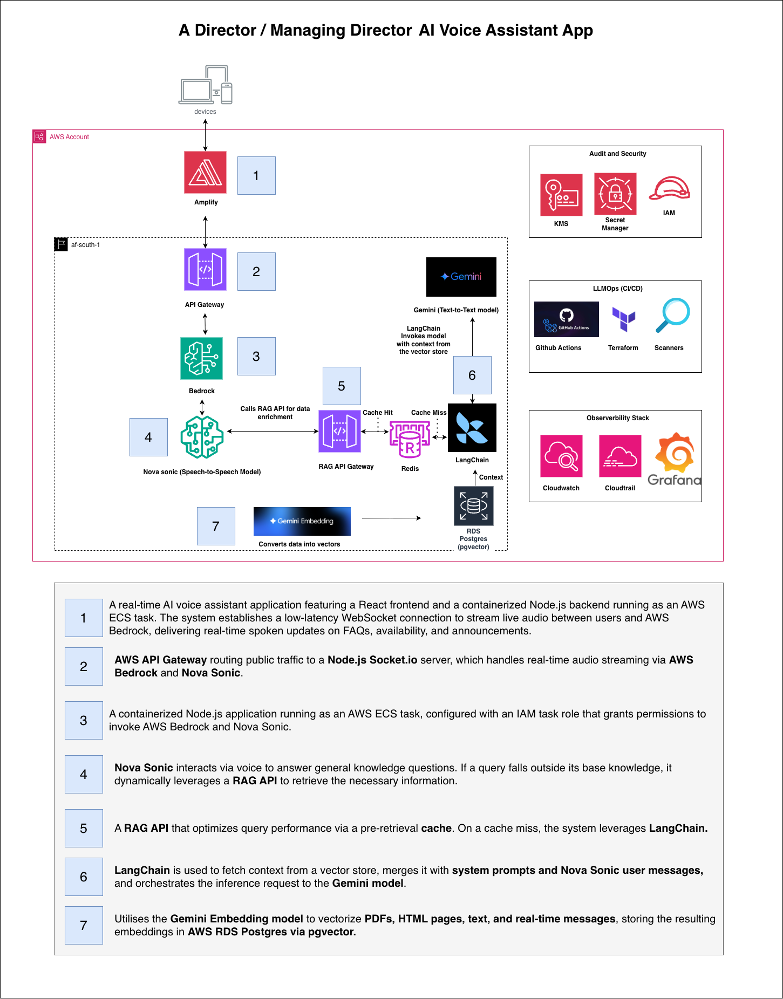
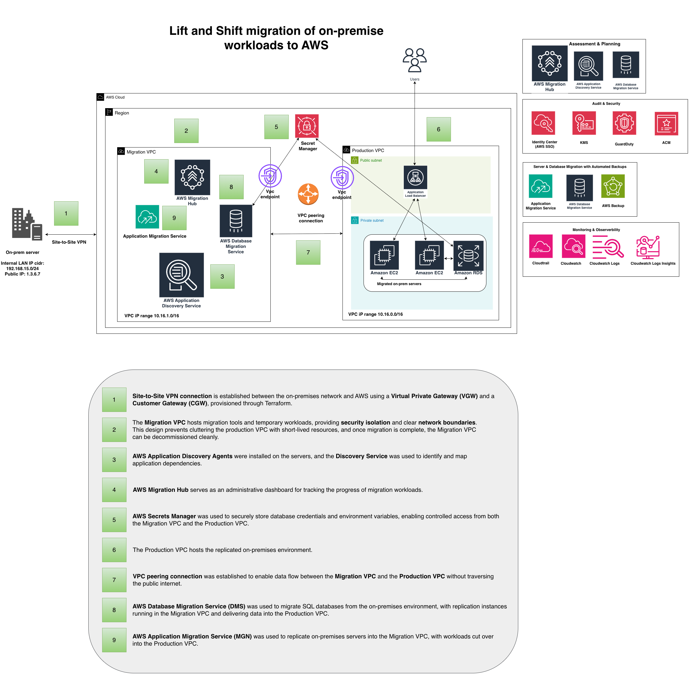
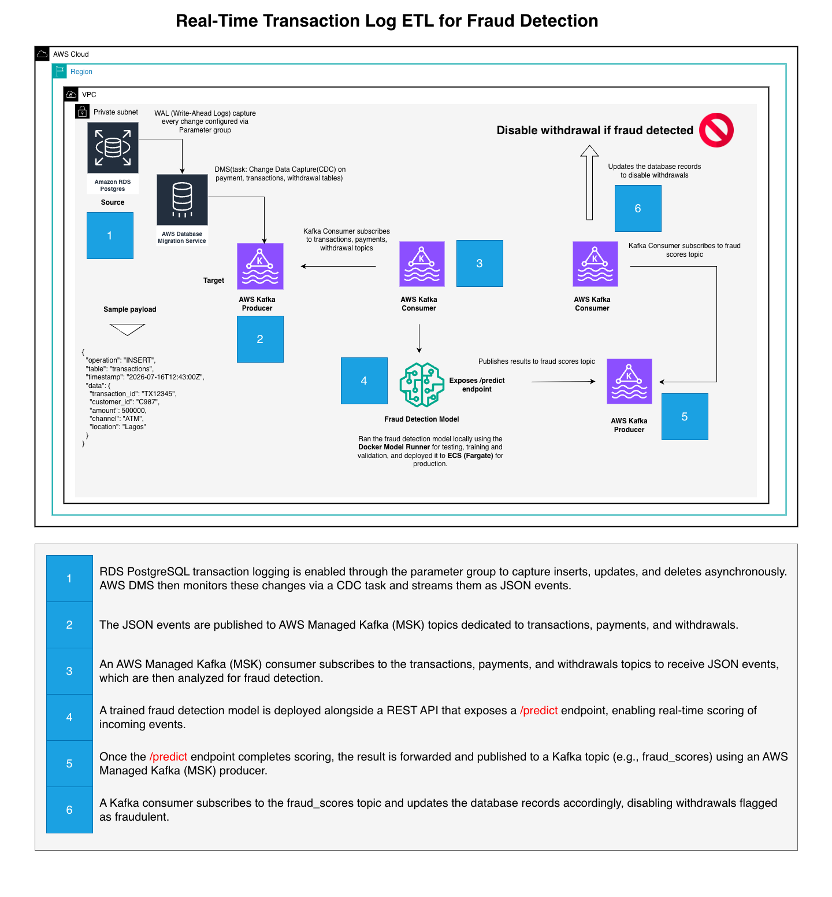

Projects
All case studies represent anonymized client work. Specific
implementations and business details have been generalized to protect
client confidentiality.
Industry: Education
Problem
Education Directors must navigate a massive, fragmented knowledge base
including multi-page policies, FAQs, announcements, and call logs
while managing daily communications with schools, teachers, and
students. Manually retrieving this information is highly inefficient
and slows down critical response times.
Solution
Nova Sonic solves this by introducing a low-latency, real-time AI
voice assistant. Instead of hunting through documents mid-call,
directors can verbally query the assistant to receive instant, spoken
answers.
The app features a dual-tier knowledge retrieval engine: it uses a
Node.js Socket.io pipeline over WebSockets to instantly pull cached
data or stream voice requests to AWS Bedrock. If a query falls outside
the core model's scope, the backend automatically triggers a fallback
route to a custom RAG API which utilizes Gemini Embeddings and vector
search to fetch the exact policy clause or announcement instantly.

My responsibilities included:
-
Designed RAG architecture and cron jobs that pulls updated FAQs,
availability schedules, and announcements from specified data
sources.
-
Defined data governance approach for PHI/PII handling within AWS
network boundary.
-
Designed LLMOps evaluation pipeline with automated deployment gates
and cost-optimized metric storage.
- Established observability strategy for the DevOps teams.
-
Created technical documentation including architecture diagrams and
ADRs.
Technology stack: Amazon RDS, Amazon Bedrock, ECS,
DynamoDB, GitHub.
Industry: Financial Services
Problem
The mortgage bank was operating on old outdated hardware that
frequently broke down. Each breakdown meant scrambling for IT support
at rising costs, while staff endured repeated downtime during
upgrades, patching, and repairs. These interruptions didn't just
affect the back office they slowed down loan processing, delayed
customer approvals, and left clients frustrated. Over time, the
constant disruptions eroded trust in the bank's ability to deliver
reliable financial services, putting both customer relationships and
the bank's reputation at risk.
Solution
The solution was to move the mortgage bank's servers and databases to
AWS through a lift-and-shift migration. By replicating
workloads in the cloud, hardware failures and costly maintenance are
no longer a burden. Staff continue using their familiar Active
Directory logins, while AWS provides the reliability, security, and
scalability needed to keep loan processing smooth and customer trust
intact.
The solution sets up a secure, encrypted Site-to-Site VPN connection
to the on-premises network and leverages AWS cloud-native tools for
migration, monitoring, and ongoing security. This ensures workloads
are safely moved, continuously observed after deployment, and
protected against threats giving the mortgage bank reliable
performance without the burden of hardware failures.

My responsibilities included:
-
Created Landing Zones:
Established secure, scalable environments with governance controls,
backup policies, and a structured deployment strategy to support
future growth.
-
Designed network architecture:
Defined CIDR ranges, configured security groups, and built Virtual
Private Clouds (VPCs) to ensure secure and efficient communication
across workloads.
-
Established observability strategy:
Implemented monitoring, logging, and alerting tools to give the team
full visibility into system health, performance, and security
events.
-
Created technical documentation :
Produced detailed architecture diagrams and documentation to guide
operations, support onboarding, and ensure knowledge transfer across
teams.
Technology stack: Amazon RDS, EC2, Terraform, Elastic
Loadbalancer, Migration Hub, AWS DMS, Application Migration Service.
Industry: Financial Services
Problem
The bank needed a way to detect fraudulent activity in real time
without impacting transaction performance. Traditional batch ETL jobs
were too slow, and trigger‑based CDC approaches introduced locks and
overhead on critical tables, risking customer experience during
withdrawals and payments.
Solution
Implemented a transaction log–based CDC pipeline using AWS DMS.
PostgreSQL WAL logs were enabled via parameter groups to capture
inserts, updates, and deletes asynchronously. DMS streamed these
changes as JSON events into AWS Managed Kafka (MSK) topics for
transactions, payments, and
withdrawals.
A fraud detection MSK consumer subscribed to these topics, invoked a
trained model through a REST API /predict endpoint, and
published results into a new fraud_scores topic. A second
consumer subscribed to fraud_scores
and updated database records to disable withdrawals flagged as
fraudulent.

My responsibilities included:
- Configured RDS PostgreSQL parameter groups for WAL‑based CDC.
- Designed DMS tasks to stream JSON events into MSK topics.
-
Developed MSK consumers for fraud detection and withdrawal
enforcement.
-
Integrated REST API model serving with Kafka producer publishing.
-
Created technical documentation and architecture diagrams for
stakeholders.
Technology stack: Amazon RDS, AWS DMS, Amazon MSK,
ECS Fargate, Fraud Detection Model (REST API), Terraform.